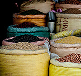

珈琲の起源

ヤギ飼いカルディの話（エチオピア起源説）
9世紀のエチオピアで、ヤギ飼いの少年カルディが、ヤギが興奮して飛び跳ねることに気づいて修道僧に相談したところ、山腹の木に実る赤い実が原因と判り、その後修道院の夜業で眠気覚ましに利用されるようになった。
僧侶シェーク・オマールの話（アラビア起源説）
13世紀のモカで、イスラム神秘主義修道者（スーフィー）のシェーク・オマール (Sheikh Omar) が、不祥事（王女に恋心を抱いた疑い）で街を追放されていた時に山中で鳥に導かれて赤い実を見つけ、許されて戻った後にその効用を広めた。
珈琲の生産量
現在コーヒーは世界60カ国以上で生産されています。たくさんの国の中で一番生産量が多いのがブラジル。世界の生産量全体のおよそ3割を占めています。しかし、2位以下には最近アジア国の躍進が目立っています。
米国農務省（USDA）の統計結果によると、現在の生産国2位はベトナム、3位がコロンビア、4位がインドネシア、5位がエチオピアです。
珈琲年表
- 1962年：
- 第一次国際コーヒー協会（ICA)成立
- 1908年：
- ドイツのメリタ・ベンツ夫人がペーパーフィルターを発明
- 1899年：
- 日本人化学者、加藤サルトリがインスタントコーヒーを発明
- 1840年：
- イギリスでサイフォンが発明される
- 1800年：
- フランスでドリップ式のコーヒーポットが登場